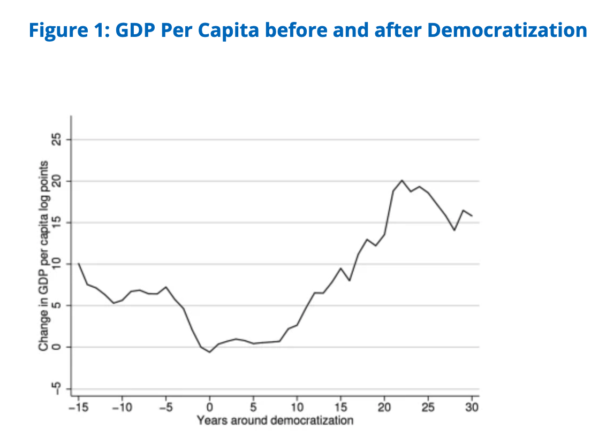

13 How institutions affect economic development?
The Prize in Economic Sciences 2024 – Daron Acemoglu, Simon Johnson and James Robinson – have demonstrated the importance of societal institutions for a country’s prosperity. Societies with a poor rule of law and institutions that exploit the population do not generate growth or change for the better. The laureates’ research helps us understand why.
13.1 The question
The most trite yet crucial question in the field of economic growth and development is: Why are some countries much poorer than others?
13.2 What is institution
An institution is a system of social factors that conjointly generate a regularity of behavior. For instance; government, university, bank etc.
13.2.1 How institutions are formed and affect prosperity
When Europeans colonized large parts of the globe, the institutions in those societies changed. This was sometimes dramatic, but did not occur in the same way everywhere.
- In some places the aim was to exploit the indigenous population and extract resources for the colonizers’ benefit.
- In others, the colonizers formed inclusive political and economic systems for the long-term benefit of European migrants.
Examples of extractive colonies include the Democratic Republic of Congo, Peru, Bolivia, India, and much of Sub-Saharan Africa. In these places, European colonizers established institutions designed to extract natural resources and labor from indigenous populations. These institutions often relied on forced labor, heavy taxation, and limited protection of property rights for the majority of the population. Political power was highly concentrated, and economic opportunities were restricted to a small elite.
Examples of inclusive colonies include the United States, Canada, Australia, and New Zealand. In these settler colonies, Europeans established institutions that protected private property, enforced the rule of law, and allowed broad participation in economic and political activities. These institutions encouraged investment, innovation, and human capital accumulation.
According to Acemoglu, Johnson, and Robinson, the key determinant of these differences was settler mortality. In regions where European settlers faced high mortality due to disease, they were unlikely to settle permanently and instead set up extractive institutions. In regions with low settler mortality, Europeans settled in large numbers and created inclusive institutions resembling those in Europe.
The long-run economic outcomes of these two groups of countries differ sharply. Countries with a history of inclusive institutions now have much higher levels of income per capita, stronger states, and more stable economic growth. In contrast, countries with a history of extractive institutions tend to exhibit lower income levels, weaker property rights, greater inequality, and persistent political instability.

Modern European colonialism began in the 15th century, when Spain and Portugal established overseas empires. By the early 20th century, it had peaked: the United Kingdom and France dominated, and nearly 100 modern-day countries were under European control, mostly in Africa, Asia, and the Caribbean.
As the chart shows, this changed rapidly after World War II. A wave of decolonization spread across the world, especially in the 1950s and 1960s. Colonies became independent countries, formed their own governments, joined international institutions, and started having their own voice in global decisions.
Colonial expansion by Europeans into Africa, Asia, Australia, the Caribbean and Pacific Islands, and North and South America profoundly shaped minority experiences in these areas of the world. Europeans were eager to move to new territories opened to them by exploration to seek freedom and economic opportunities.
The laureates have shown that one explanation for differences in countries’ prosperity is the societal institutions that were introduced during colonization. Inclusive institutions were often introduced in countries that were poor when they were colonized, over time resulting in a generally prosperous population. This is an important reason for why former colonies that were once rich are now poor, and viceversa.
Some countries become trapped in a situation with extractive institutions and low economic growth. The introduction of inclusive institutions would create long-term benefits for everyone, but extractive institutions provide short-term gains for the people in power. As long as the political system guarantees they will remain in control, no one will trust their promises of future economic reforms. According to the laureates, this is why no improvement occurs.
13.2.2 Economic institutions matter for economic growth
- Economic institutions shape the incentives of key economic actors in society, in particular, they influence investments in physical and human capital and technology, and the organization of production.
- Although cultural and geographical factors may also matter for economic performance, differences in economic institutions are the major source of cross-country differences in economic growth and prosperity.
- Economic institutions not only determine the aggregate economic growth potential of the economy, but also an array of economic outcomes, including the distribution of resources in the future (i.e., the distribution of wealth, of physical capital or human capital).
- In other words, they influence not only the size of the aggregate pie, but how this pie is divided among different groups and individuals in society. We summarize these ideas schematically as (where the subscript t refers to current period and t+1 to the future):
\[ Economic \ Institutions => \left\{ \begin{array}{ll} Economic \ performance_t & \\ Distribution \ of \ resources_{t+1} & \end{array} \right. \]
13.2.3 Three fundamental causes of income differences
13.2.3.1 Economic institutions
At its core, the hypothesis that differences in economic institutions are the fundamental cause of different patterns of economic growth is based on the notion that it is the way that humans themselves decide to organize their societies that determines whether or not they prosper. Some ways of organizing societies encourage people to innovate, to take risks, to save for the future, to find better ways of doing things, to learn and educate themselves, solve problems of collective action and provide public goods. Others do not.
- Institutions shape the incentives and opportunities.
- log GDP per capita and World Bank’s rule of law index

- The “Rule of Law Index” evaluates 142 countries and jurisdictions around the world. For the seventh year in a row, the rule of law has declined in most countries.

You can find the recent Rules and Law Index from the following link: https://worldjusticeproject.org/rule-of-law-index/global
13.2.3.1.1 Institutions are endogenous
- Correlation between institutions and prosperity does not imply a causal effect from institutions
- Perhaps rich countries can “afford” better institutions, or their populations “demand” such institutions
- Or omitted factors influence both institutions and prosperity
13.2.3.1.2 European colonial history
- Colonialism is one of the most formative institutional events of the millennium
- It also provides a laboratory for understanding the effects of institutions
- Europeans set up—and led to the development of—very different sets of institutions across the colonial empire
- We see in the colonial world the whole range of institutions, from highly extractive to broadly inclusive ones. But why?
- We need a theory
13.2.3.1.3 How institutions matter
- Political institutions and the distribution of resources (capital, land, human capital) as state variables.
- Economic institutions shape incentives for investment, innovation and economic participation.
- Institutional persistence and institutional change caused by the interplay of these dynamics
13.2.3.2 Geography
While institutional theories emphasize the importance of man-made factors shaping incentives, an alternative is to focus on the role of “nature”, that is, on the physical and geographical environment. In the context of understanding cross-country differences in economic performance, this approach emphasizes differences in geography, climate and ecology that determine both the preferences and the opportunity set of individual economic agents in different societies. We refer to this broad approach as the “geography hypothesis”. There are at least three main versions of the geography hypothesis, each emphasizing a different mechanism for how geography affects prosperity.
- First, climate may be an important determinant of work effort, incentives, or even productivity.
- Second, geography may determine the technology available to a society, especially in agriculture.
- The third variant of the geography hypothesis, especially popular over the past decade, links poverty in many areas of the world to their “disease burden”, emphasizing that: “The burden of infectious disease is similarly higher in the tropics than in the temperate zones”
13.2.3.3 Culture
The final fundamental explanation for economic growth emphasizes the idea that different societies (or perhaps different races or ethnic groups) have different cultures, because of different shared experiences or different religions. Culture is viewed as a key determinant of the values, preferences and beliefs of individuals and societies and, the argument goes, these differences play a key role in shaping economic performance.
13.2.4 Institutions matter
We now argue that there is convincing empirical support for the hypothesis that differences in economic institutions, rather than geography or culture, cause differences in incomes per-capita. Why do institutions matter?
- Incentives: Institutions determine economic rewards and risks.
- Political Power: Those in power influence institutions to benefit themselves.
- Long-term Development: Good institutions promote investment, innovation, and efficiency.
Acemoglu et al 2019 suggests that, on average, democratizations increase GDP per capita by about 20 percent in the long run (Figure below). However, that does not mean that one can just introduce elections and hope to get the observed average boost-effect. State capacity – shaped by the incentives, beliefs and professional norms shared among state personnel - is crucial to explain differences in institutional performance and policy effectiveness.

13.2.4.1 The Korean Experiment
- Natural experiment: Korea was divided into North and South after WWII.
The division of Korea into North and South Korea after World War II is often considered a “natural experiment” by social scientists, as it provides a unique opportunity to study how two populations with largely similar cultural backgrounds can develop vastly different economic and political systems due to the contrasting political ideologies imposed on them by the occupying powers, the US and the Soviet Union, following the Cold War division along the 38th parallel. The Cold War division of Korea in 1948 can be viewed as an ongoing natural experiment in institutional change (Acemoglu et al., 2005).
- Same culture and geography, but different institutions
- North Korea: Centrally planned economy → stagnation
- South Korea: Market-oriented institutions → rapid growth
- Conclusion: Institutional differences led to economic divergence
13.2.4.2 The Colonial Experiment
When Europeans colonized large parts of the globe, the institutions in those societies changed. This was sometimes dramatic, but did not occur in the same way everywhere. In some places the aim was to exploit the indigenous population and extract resources for the colonizers’ benefit. In others, the colonizers formed inclusive political and economic systems for the long-term benefit of European migrants.
- Colonization changed institutions worldwide.
- Different institutions were established in different regions:
- Extractive Institutions: Latin America, Africa (forced labor, elite rule).
- Inclusive Institutions: North America, Australia (broad property rights).
- Long-term impact: Regions with inclusive institutions became wealthier.
13.2.4.3 Policy Implications
- Economic development requires institutional reform
- Democracies tend to have stronger institutions
- Constraints on government power promote stable growth
- Reducing corruption and ensuring property rights are key
References:
- Nobel Prize Lecture by Daron Acemoglu, Simon Johnson and James Robinson.
- Acemoglu, D., Johnson, S., and Robinson, J. (2005). Institutions as a Fundamental Cause of Long-Run Growth. Handbook of Economic Growth.
- North, D. (1990). Institutions, Institutional Change, and Economic Performance. Cambridge University Press.
- Acemoglu, D., Naidu, S., Restrepo, P., and Robinson, J. (2019). Democracy does cause growth. Journal of political economy, 127, 47-100.